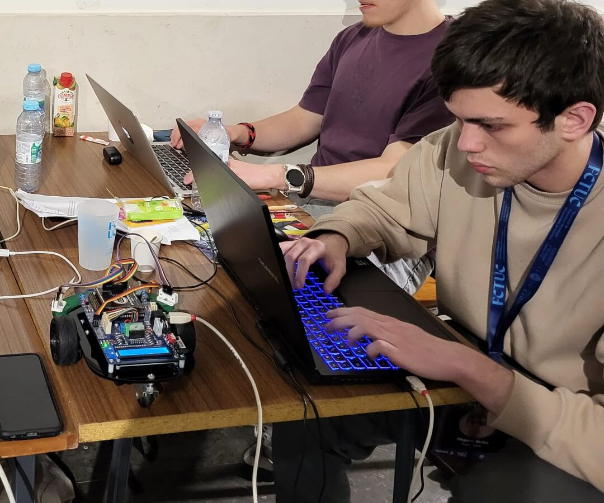
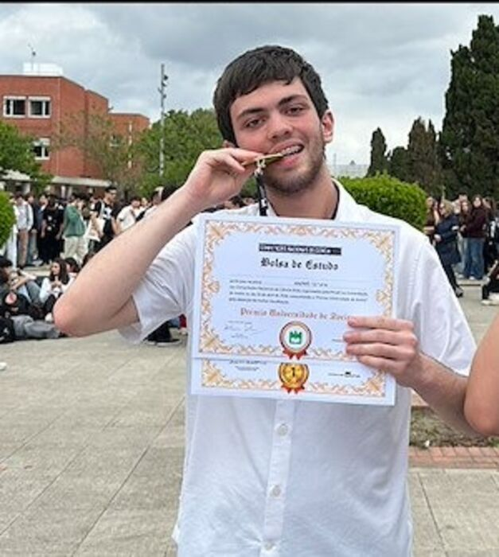
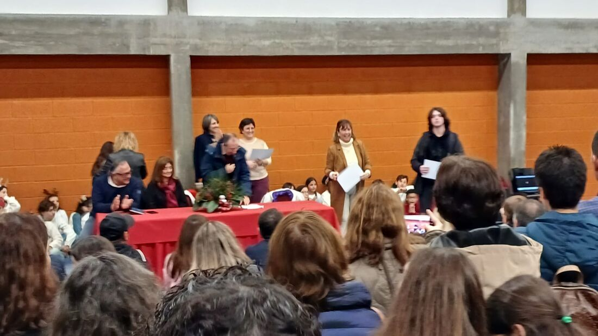
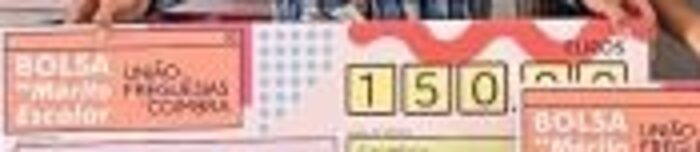
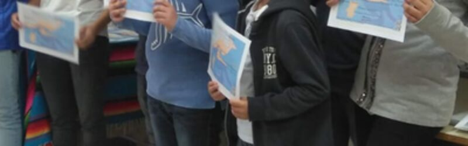

Sobre mim
Fiz a escola toda em Coimbra e este ano vim para o Porto estudar Engenharia Civil. Sempre gostei mais de Matemática e de Física. Nos últimos dois anos comecei também a programar. Aqui fica o que fiz até agora, com algumas fotos.
O meu percurso
-
outubro 2026
Licença de radioamador
Estou a preparar o exame de radioamador da ANACOM (Categoria 1), que vou fazer no Porto em outubro. Quando tiver a licença, a primeira coisa que quero experimentar é mandar uma mensagem de texto pelo QO-100. É um satélite geoestacionário que os radioamadores podem usar a partir de Portugal.
-
setembro 2026
Entrada na FEUP
Acabei o secundário com 18,5 de média e 20 a Matemática e a Física. Depois entrei em Engenharia Civil na FEUP. Como a Física do 12.º ano é quase toda Mecânica, um curso sobre estruturas e as cargas que elas aguentam pareceu-me a escolha certa.
-
primavera 2026
Competição Nacional de Ciência do PmatE

Competição por equipas na Universidade de Aveiro. Ganhámos a categoria de Matemática e cada um de nós recebeu uma bolsa de estudo da universidade.
-
março 2026
BotOlympics: 2.º lugar
Fomos quatro da minha escola e concorremos na categoria do secundário. O robô tinha de percorrer sozinho um labirinto e deixar caixas nos sítios marcados. Fui eu que escrevi o código de controlo em C/C++, a partir do zero. É ele que lê os sensores, controla os motores e decide para onde virar. No papel estava tudo certo. Na pista quase nada funcionou à primeira. Com a luz do recinto os sensores liam de outra maneira, as rodas patinavam e as curvas que na escola saíam bem ficavam uns centímetros ao lado. Nada disto dava para prever antes de lá chegarmos, e cada correção parecia trazer um problema novo. Passámos quase três dias a pôr o robô na pista, a ver onde falhava, a mudar o código e a tentar outra vez. O que tirei daqui é que as soluções simples foram as que aguentaram melhor. Código bem organizado, que conseguia explicar aos outros num minuto e que seguia sempre o mesmo padrão, continuava a funcionar quando as condições pioravam. Os truques mais rebuscados eram normalmente os primeiros a falhar. Na final já estava fiável o suficiente para ficarmos em segundo.
-
2024 a 2025
Aprender a programar
Queria aprender a programar como deve ser e comecei a ter explicações. Começámos pelo C e depois passámos ao C++ e ao Java. Um ano depois foi isso que me ajudou a programar o robô.
-
2024
Olimpíadas de Matemática e Projeto Delfos
Cheguei à final nacional das Olimpíadas Portuguesas de Matemática e entrei no Projeto Delfos da Universidade de Coimbra, que prepara alunos para as olimpíadas. Continuei no Delfos até ao fim do 12.º ano. Nas olimpíadas quase tudo são demonstrações e isso mudou a minha maneira de resolver problemas. Hoje já não salto passos só porque me parecem óbvios.
-
2023
Fim do 9.º ano

Fui aluno distinguido no fim do 9.º ano e fiz o meu segundo Erasmus+, desta vez na Sérvia. Em setembro entrei na Escola Secundária Avelar Brotero, em Ciências e Tecnologias.
-
2022
Bolsa de mérito e o primeiro Erasmus+

A União das Freguesias de Coimbra deu-me uma bolsa de mérito escolar. No mesmo ano fui à Polónia num intercâmbio Erasmus+. Foi a primeira vez que tive de fazer um trabalho todo em inglês com pessoas que nunca tinha visto.
-
2019
Canguru Matemático

Foi a minha primeira competição de Matemática. Estava no 6.º ano e fiquei em 3.º lugar na escola. Continuei a participar e em 2021 fiquei em 1.º no agrupamento.
Contacto
Para falar comigo, o mais fácil é mandar um email para miguelsilvabrito@proton.me.
O meu CV em PDF: Miguel_Brito_CV_PT.pdf